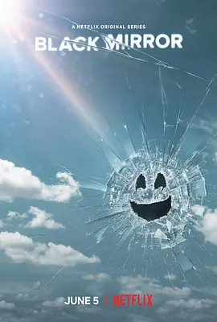

7.0
黑镜 第五季
Black Mirror Season 5
2019
美国
评分 7.0
导演:
詹姆斯·霍斯
演员:
安德鲁·斯科特 / 麦莉·赛勒斯 / 安东尼·麦凯 / 叶海亚·阿卜杜勒-迈丁 / 托弗·格雷斯
类型:
剧情,惊悚,科幻
剧情简介
这一季仅由三集组成，却依旧保持了《黑镜》一贯的锋利与不安，将当代科技的诱惑与隐痛以更贴近现实的方式推向观众。剧集氛围比前几季更沉稳，镜头贴近人物，让科技所引发的情感冲突格外锐利。在《史崔金·万普斯》中，看似平静的中年生活随着一款沉浸式格斗游戏的出现被悄然撕开裂缝。多年未见的好友在虚拟世界里重逢，熟悉的打斗动作变成难以言说的亲密接触。两人在现实与虚拟之间不断摇摆，深夜的客厅、闪烁的屏幕、无处安放的情绪，共同构成嵌入他们婚姻与友情中的暗流。科技在激活欲望的同时，也暴露了身份、关系与自我认知间最模糊的界线。《碎片》则以更现实的视角直击当代社交媒体的力量。一名网约车司机载着一家科技巨头的年轻员工驶入荒郊，原本普通的行程在暴风雨下逐渐变得紧绷。手枪藏在掌心，车窗外的风在田野间乱撞；而手机另一端的谈判则一点点撕开他压抑已久的创伤。故事节奏紧密，人物的崩溃在寂静的空气中愈发清晰，科技公司掌控舆论与数据的模式被赤裸裸地暴露出来。《瑞秋、杰克与艾什莉》则换上一层更流行也更讽刺的外衣。少女瑞秋沉迷于流行偶像艾什莉·O，而偶像本人在华丽舞台背后却被彻底商品化。闪光灯下的微笑、压抑情绪后的疲惫、智能玩偶里封存的意识……一段看似轻松的冒险逐渐揭开娱乐工业冰冷的控制逻辑。姐妹间的争吵、公路上的奔逃，以及偶像在舞台上重新发声，都让故事在热闹表象中保留了一丝反叛的力量。这一季虽然规模更小，却以三种不同的节奏展现科技如何渗透情感、欲望、悲痛与身份，让每个角色在光亮屏幕前都无处可逃。